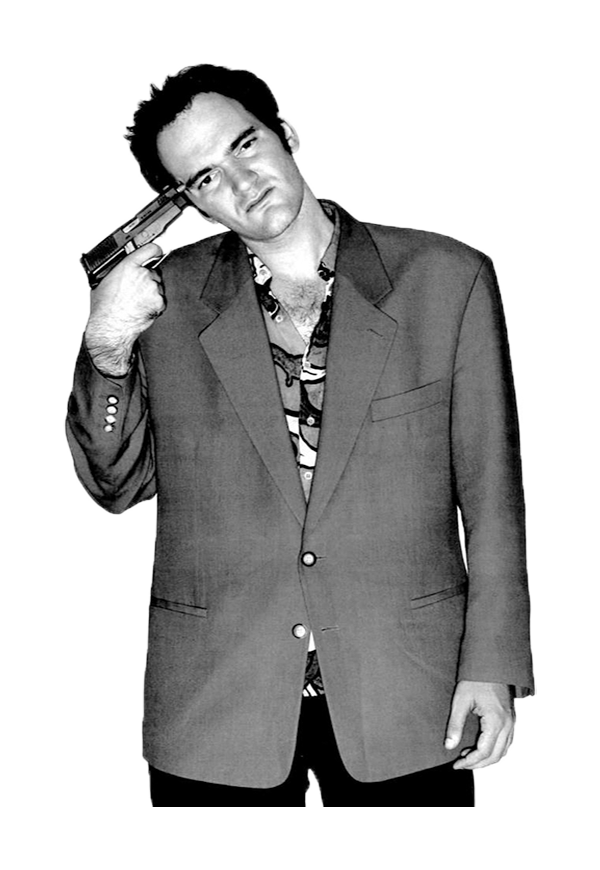

Cinema Tarantino
About Quentin Tarantino

Quentin Jerome Tarantino was born in Knoxville, Tennessee. His father, Tony Tarantino, is an Italian-American actor and musician from New York, and his mother, Connie (McHugh), is a nurse from Tennessee. Quentin moved with his mother to Torrance, California, when he was four years old.
In January of 1992, first-time writer-director Tarantino's Wściekłe psy (1992) appeared at the Sundance Film Festival. The film garnered critical acclaim and the director became a legend immediately. Two years later, he followed up Dogs success with Pulp Fiction (1994) which premiered at the Cannes film festival, winning the coveted Palme D'Or Award. At the 1995 Academy Awards, it was nominated for the best picture, best director and best original screenplay. Tarantino and writing partner Roger Avary came away with the award only for best original screenplay. In 1995, Tarantino directed one fourth of the anthology Cztery pokoje (1995) with friends and fellow auteurs Alexandre Rockwell, Robert Rodriguez and Allison Anders. The film opened December 25 in the United States to very weak reviews. Tarantino's next film was Od zmierzchu do świtu (1996), a vampire/crime story which he wrote and co-starred with George Clooney. The film did fairly well theatrically.
Since then, Tarantino has helmed several critically and financially successful films, including Jackie Brown (1997), Kill Bill (2003), Kill Bill 2 (2004), Bękarty wojny (2009), Django (2012) and Nienawistna ósemka (2015).
- IMDb Mini Biography By: Kale Whorton